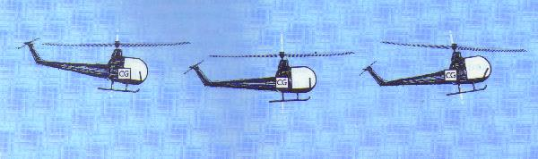
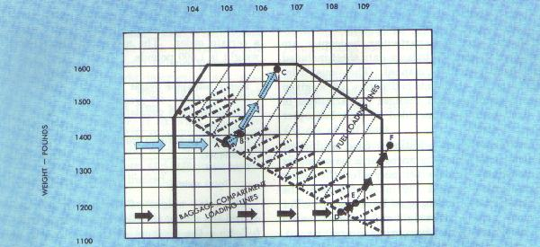
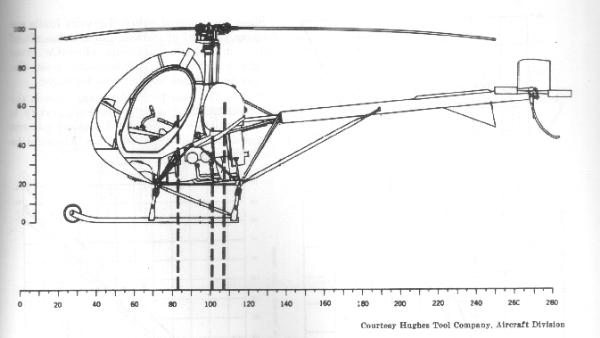
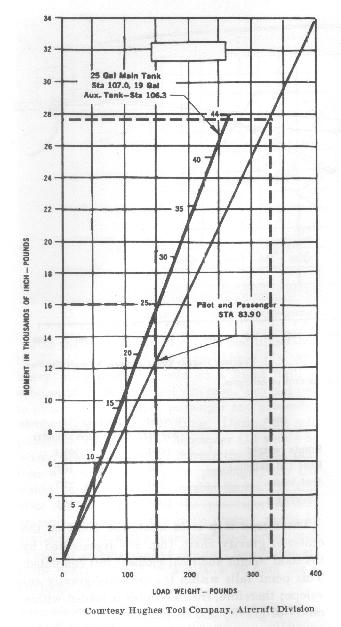
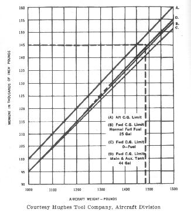
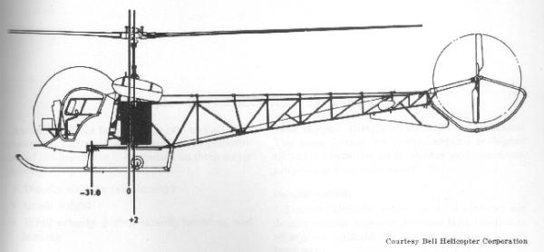

All helicopters are designed for certain limit loads
and balance conditions. The pilot is responsible for making sure that the
weight and balance limitations are met before takeoff. Any pilot who takes
off in a helicopter that is not within the designed load and balance
condition is not only violating FAA regulations but is inviting disaster.
Three kinds of weight must be considered in the
loading of every helicopter. These are empty weight, useful load, and
gross weight.
Empty weight.-- The weight of the helicopter including the structure, the powerplant, all fixed equipment, all fixed ballast, unusable fuel, oil, total quantity of engine coolant, and total quantity of hydraulic fluid.
Useful load (payload).--The weight of the pilot, passengers, baggage (including removable ballast and usable fuel).
Gross weight.--The empty weight plus the useful load.
Maximum gross weight.--The maximum weight for which the helicopter is certificated for flight.
Although a helicopter is certificated for a specified
maximum gross weight, it will not be safe off with load under all
conditions. Conditions that affect takeoff, climb, hovering, and landing
performance may require the "off loading" of fuel, passengers, or
baggage to some weight less than maximum allowable. Such conditions would
include high altitudes, high temperatures, and high humidity, the
combination of which determines the density altitude at any given place.
Additional factors to consider are takeoff and landing surfaces, takeoff
and landing distances available, and the presence of obstacles.
Because of the various adverse conditions that may
exist, many times the helicopter pilot must decide the needs of the type
mission to be flown and load the helicopter accordingly. For example, if
all seats are occupied and maximum baggage is carried, gross weight
limitations may require that less than maximum fuel be carried. On the
other hand, if the pilot is interested in range, a full fuel load but fewer
passengers and less baggage may be decided upon.
Not only must the pilot consider the gross weight of
the helicopter, but also must determine that the load is arranged to fall
within the allowable center-of-gravity range specified in the helicopter
weight and balance limitations contained in the helicopter flight manual.
The center of gravity, often referred to as the "CG," is the point
at which all the weight of the system is considered to be concentrated.
If the helicopter were suspended by a sling attached to the
center-of-gravity point, the helicopter fuselage would remain parallel to
the surface much as a perfectly balanced teeter-totter (seesaw). The
allowable range is specified for each helicopter, but it usually extends a
short distance fore and aft of the main rotor mast. For most types of
helicopters, the location of the CG must be kept within much narrower limits
than that in airplanes--less than 3 inches in some cases.
The ideal condition is to have the helicopter in such
perfect balance that the fuselage will remain horizontal in hovering flight,
with no cyclic pitch control necessary except that which may be made
necessary by wind. The fuselage acts as a pendulum suspended from the rotor.
Any change in the center of gravity changes the angle at which it hangs from
this point of support. If the center of gravity is located directly under
the rotor mast, the helicopter hangs horizontal; if the center of gravity
is too far aft of the mast, the helicopter hangs with the nose tilted up;
and if the center of gravity is too far forward of the mast, the nose
tilts down (fig. 45). Out of balance
loading of the helicopter makes control more difficult and decreases
maneuverability since cyclic stick effectiveness is restricted in the
direction opposite to CG location. Because helicopters are relatively
narrow and high sideward speeds will not be attained, lateral balance
presents no problems in normal flight instruction and passenger flights,
although some light helicopter manuals specify the seat from which solo
flight will be made. However, if external loads are carried in such a
position that a large lateral displacement of the cyclic stick is required
to maintain level flight, fore and aft cyclic stick effectiveness will be
very limited.

Figure 45.- Effect of center of gravity on cyclic stick
position and helicopter attitude during hovering flight.
This condition may arise in a two-place helicopter when
a heavy pilot and passenger take off without baggage or proper ballast
located aft of the rotor mast. The condition will become worse as the flight
progresses due to fuel consumption, if the main fuel tank is also located
aft of the rotor mast.
The pilot will recognize this condition after coming
to a hover following following a vertical takeoff. The helicopter will have
a nose-low attitude and an excessive rearward displacement of the cyclic
stick will be required to maintain a hover in a no-wind condition, if
hovering flight can be maintained at all
(fig. 45). Flight under this condition should not be continued
since the possibility of running out of rearward cyclic control will
increase rapidly as fuel is consumed, and the pilot may find it impossible
to decelerate sufficiently to bring the helicopter to a stop. Also, in case
of engine failure and the resulting autorotation, sufficient cyclic control
may not be available to flare properly for the landing.
Hovering into a strong wind will make this condition
less easily recognizable since less rearward displacement of the cyclic
control will be required than when hovering in a no-wind condition.
Therefore, in determining if a critical balance condition in this situation
exists, the pilot should consider the wind velocity and its relation to
rearward displacement of the cyclic stick.
Without proper ballast in the cockpit, this condition
may arise when (1) a lightweight pilot takes off solo with a full load of
fuel loaded aft of the rotor mast, (2) a lightweight pilot takes off with
maximum baggage allowed in a baggage compartment located aft of the rotor
mast, or (3) a lightweight pilot takes off with a combination of baggage and
substantial fuel where both are aft of the rotor mast.
The pilot will recognize this condition after coming
to a hover following a vertical takeoff. The helicopter will have a tail-low
attitude and an excessive forward displacement of the cyclic stick will be
required to maintain a hover in a no-wind condition, if a hover can be
maintained at all. If there is a wind, an even greater forward displacement
will be required.
If flight is continued in this condition, the pilot
may find it impossible to fly in the upper allowable airspeed range due to
insufficient forward cyclic displacement to maintain a nose-low
attitude. This particular condition may become quite dangerous if gusty
or rough air accelerates the helicopter to a higher airspeed than forward
cyclic control will allow. The nose will start to rise and full forward
cyclic stick may not be sufficient to hold it down or to lower it once
it rises.
Weight and balance information
When a helicopter is delivered from the factory, the
empty weight, empty weight CG, and useful load for each particular
helicopter are noted on a weight and balance data sheet included in the
helicopter flight manual. These quantities will vary for different
helicopters of a given series depending upon changes or variations in the
fixed equipment included in each helicopter when delivered.
If, after delivery, additional fixed equipment is
added, or if some is removed, or a major repair or alteration is made
which may affect the empty weight, empty weight CG, or useful load, the
weight and balance data must be revised to reflect these new values. All
weight and balance changes will be entered in the appropriate aircraft
record. This generally will be the aircraft logbook. The latest
weight and balance data should be used in computing all loading problems.
Sample weight and balance problems
In loading a helicopter for flight the problem is two-fold:
* Is the gross weight within the maximum allowable gross weight?
* Does the helicopter meet balance requirements, i.e., is the CG
within the allowable CG range?
To answer the first question, merely add the weight
of the items comprising the useful load (pilot, passengers, fuel, and
baggage) to the empty weight of the helicopter. (Obtain the latest empty
weight information from the appropriate aircraft record.) Then check the
total weight obtained to see that it does not exceed maximum allowable
gross weight.
To answer the second question, use the loading chart
or loading table in the helicopter flight manual for the particular
helicopter that is being flown.
Sample problem 1.--Determine if the gross weight and center of gravity are within allowable limits under the following loading conditions for a helicopter based on the loading chart in figure 46.
| Pounds | ||
| Empty weight | ____________________ | 1,040 |
| Seat load: | ||
| Pilot | ____________________ | 135 |
| Passenger | ____________________ | 200 |
| Baggage | ____________________ | 25 |
| Fuel (30 gallons) | ____________________ | 180 |
Solution: To use the loading chart for the helicopter in this example, the items comprising the useful load must be added to the empty weight in a certain order. The maximum allowable gross weight is 1,600 pounds.
| Pounds | |||
| Empty weight | ____________________ | 1,040 | |
| Seat load (pilot-135 pounds; passenger-200 pounds) |
____________________ | 335 | |
| Subtotal | ____________________ | 1,375 | (point A) |
| Baggage compartment load | ____________________ | 25 | |
| Subtotal | ____________________ | 1,400 | (point B) |
| Fuel load | ____________________ | 180 | |
| Total weight | ____________________ | 1,580 | (point C) |
The total weight of the helicopter does not exceed the maximum allowable gross weight. By following the sequence of steps (locating points A, B, and C) on the loading chart, it is found that the CG is within allowable limits (fig. 46).

Figure 46.- Loading chart illustrating the solution
to sample problems 1 and 2.
Sample problem 2.--For this example, assume that the pilot in sample problem 1 discharges the passenger after using only 20 pounds of fuel.
| Solution: | Pounds | ||
| Empty weight | ____________________ | 1,040 | |
| Seat load (pilot-135 pounds) | ____________________ | 135 | |
| Subtotal | ____________________ | 1,175 | (point D) |
| Baggage compartment load | ____________________ | 25 | |
| Subtotal | ____________________ | 1,200 | (point E) |
| Fuel load | ____________________ | 160 | |
| Total weight | ____________________ | 1,360 | (point F) |
Although the total weight of the helicopter is well below the maximum allowable gross weight, the CG falls outside the aft allowable limit as defined by the loading chart (fig. 46).
This example illustrates the importance of
reevaluating the balance problem in a helicopter whenever a change is
made in the loading. In most airplanes, the discharging of a passenger
would have little effect on the CG. Because of this fact, the airplane
pilot may not be aware of the critical loading problems that must
constantly be kept in mind as a helicopter pilot. If the pilot in this
example takes off again after discharging the passenger, there will be
insufficient forward cyclic stick control to hover in a strong wind; it
may be impossible to fly in the upper airspeed range due to insufficient
forward cyclic control to maintain a nose-low attitude; and a dangerous
situation will exist if gusty or rough air accelerates the helicopter to
a higher airspeed than forward cyclic control will allow.
Just the opposite situation from that illustrated by
sample problems 1 and 2 could exist if a very heavy pilot proceed solo on
a flight until a substantial amount of fuel was used, then stopped to pick
up a very heavy passenger and proceeded on the flight without refueling.
During the solo portion of the flight, the helicopter CG would be within
allowable limits. During the second portion of the flight with the
passenger, the CG would be forward of allowable limits. If this pilot did
take off with the passenger in this example, insufficient aft cyclic control
would be available to slow the helicopter to a hover and, in case of an
autorotative landing, insufficient aft cyclic control would be available to
flare for a landing.
Determining the CG without the use of a loading chart or table
An alternate method of computing center of gravity
is to use the arm-weight-moment computation method. To use this method,
we must know the empty weight and empty weight CG (obtained from the
appropriate aircraft record) and weight and distance from the datum
line of each portion of the useful load--pilot and passengers, usable
fuel, and baggage. The following formulas will be used:
| Weight X arm | = Moment | |
| Moment + moment | = Total Moment | |
| | ||
| Total moment -------------- Total weight |
= CG |
Some manufacturers chose the datum line at or ahead of
the most forward structural point on the helicopter, in which case all
moments are positive. Other manufacturers chose the datum line at some
point in the middle of the helicopter in which case moments produced by
weight ahead of the datum line are negative, and moments produced by
weight aft of the datum line are positive. A sample problem will be
shown for each type.
If external loads are carried, this is the method
by which the center of gravity will normally be computed.

Figure 47.- Datum line forward of helicopter.
Sample Problem 3.--For this example, the
datum line is chosen ahead of the most forward structural point on the
helicopter (fig. 47).
| Item | Weight (pounds) | Arm (inches) | Moment (inch pounds) | ||
| Empty weight____________ | 1,004 | X | 101.0 | = | 101,404 |
| Fuel (25 gallons) _________ | 150 | X | 107.0 | = | 16,050 |
| Seat load_______________ | 330 | X | 83.9 | = | 27,687 |
| TOTALS__________ | 1,484 | 145,141 |
| CG = | Total moment ---------------- Total weight |
= | 145,141 ---------- 1,484 | = | 97.8 inches aft of datum line |
Since the approved center-of-gravity limits are station 95 (95 inches from datum line) and station 100, and the maximum allowable gross weight is 1,600 pounds, the helicopter meets the weight and balance requirements for flight.
Figures 48 and 49 show how the charts in the helicopter flight manual would normally be used to compute the CG in this helicopter. To compute the the CG from these charts, the first step is to determine the total weight of total weight of the helicopter (in pounds) and total moment (in thousands of inch-pounds).
|

Figure 48.- Loading chart. |

Figure 49.- Center-of-gravity chart. |
1. The empty weight and empty weight CG are obtained from the latest weight and balance information in the helicopter flight manual. In this case 1,040 pounds and 101.4.
2. The total moments for the fuel load and seat load are found from the loading chart (fig. 48). Locate the diagonal line indicating fuel quantities and stations. Draw a horizontal line from the 25-gallon mark to the left side of the chart the moment is read to be 16.
3. Locate the point representing the seat load along
the bottom of the chart. From this point, draw a vertical line until it
intersects the diagonal line marked "Pilot and Passenger." From
this point of intersection, draw a horizontal line to the left side of the
chart where the moment is read as 27.7. Tabulating these results and
totaling, we have the following:
| Item |
Weight (pounds) |
Moment (thousands of inch-pounds) |
| Empty weight________________ | 1,004 | 101.4 |
| Fuel (25 gallons)______________ | 150 | 16.0 |
| Seat load ___________________ | 330 | 27.7 |
| TOTALS_______________ | 1,484 | 145.1 |
The second step is to locate the point on the center-of-gravity chart (fig. 49) represented by the total weight and total moment just computed. This point falls within the center-of-gravity envelope; therefore, the helicopter is loaded within center-of-gravity and weight limits.

Figure 50.- Datum line near rotor mast.
Sample Problem 4.- In this example, the datum
line is chosen at a point in the middle of the helicopter
(fig. 50).
| Item | Weight (pounds) | Arm (inches) |
Moment (inch-pounds) | |||
| ||||||
| Empty weight____________ | 1,820 | +6 |
| |||
| Fuel (41 gallons)__________ | 246 | +2 |
| |||
| Seat load _______________ | 330 | -31 |
| |||
| TOTALS___________ | 2,396 |
|
Total moment = 11,412 - 10,230 = 1,182
| CG | = | Total moment ------------ total weight |
= | 1,182 ----- 2,396 |
= | +0.5 inches aft of datum line |
Since the approved center-of-gravity limits are 3
inches forward of station 0, to 4 inches aft of station 0, and the
maximum allowable gross weight is 2,850 pounds, the helicopter meets
the weight and balance requirements for flight.
Because the total positive moment exceeds the total
negative moment, the center of gravity is aft of the datum line. Had the
negative moment exceeded the positive moment, the CG would be forward of
the datum line.
{kind=link}
{kind=link}
{kind=link}
{kind=link}
{kind=link}
{kind=link}